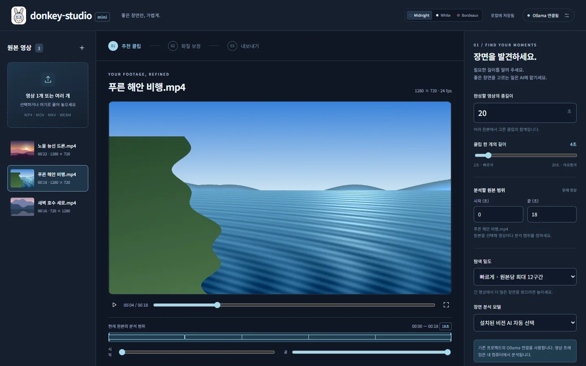
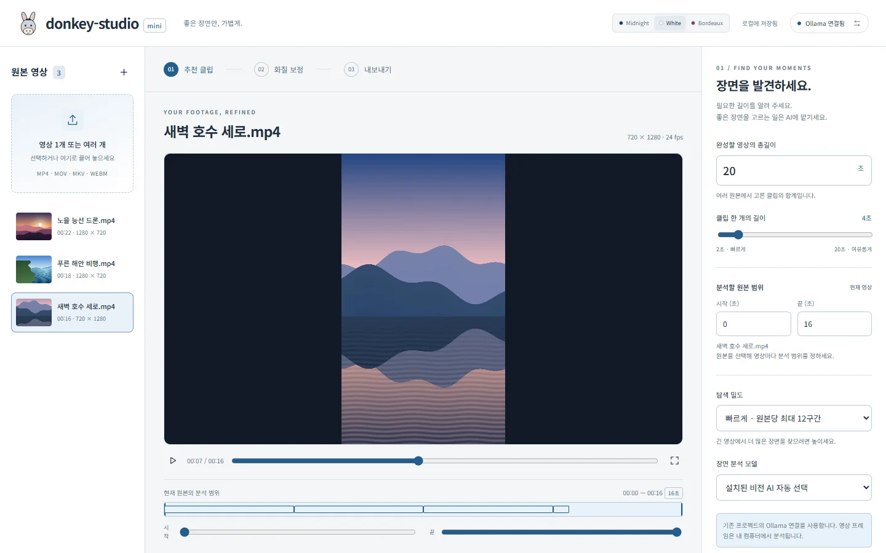
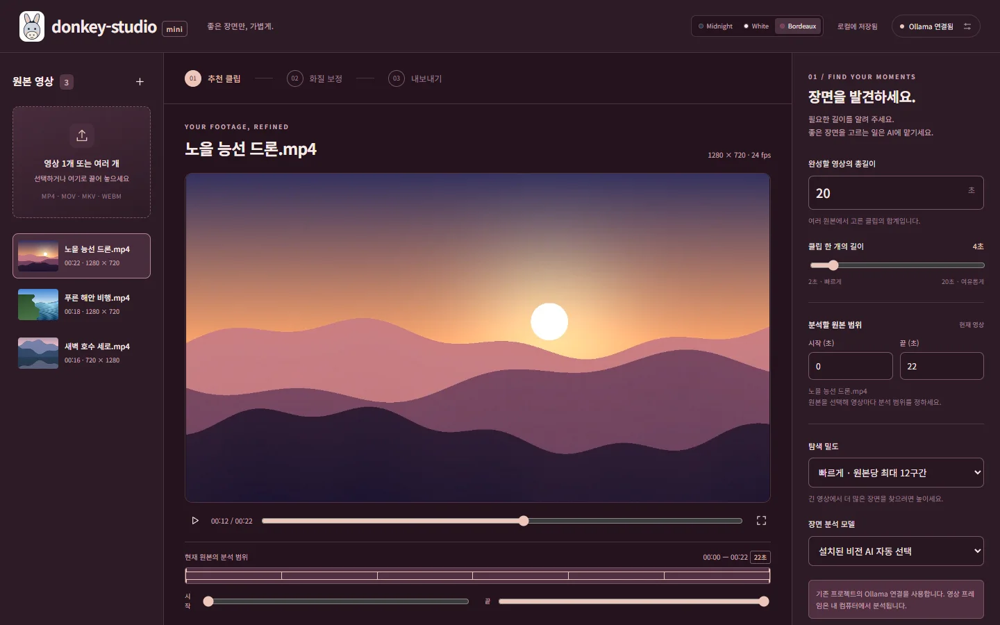
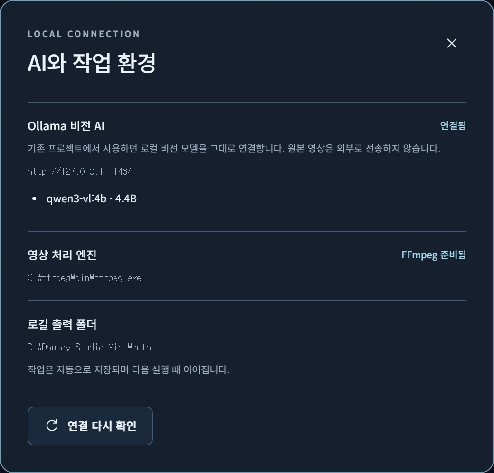
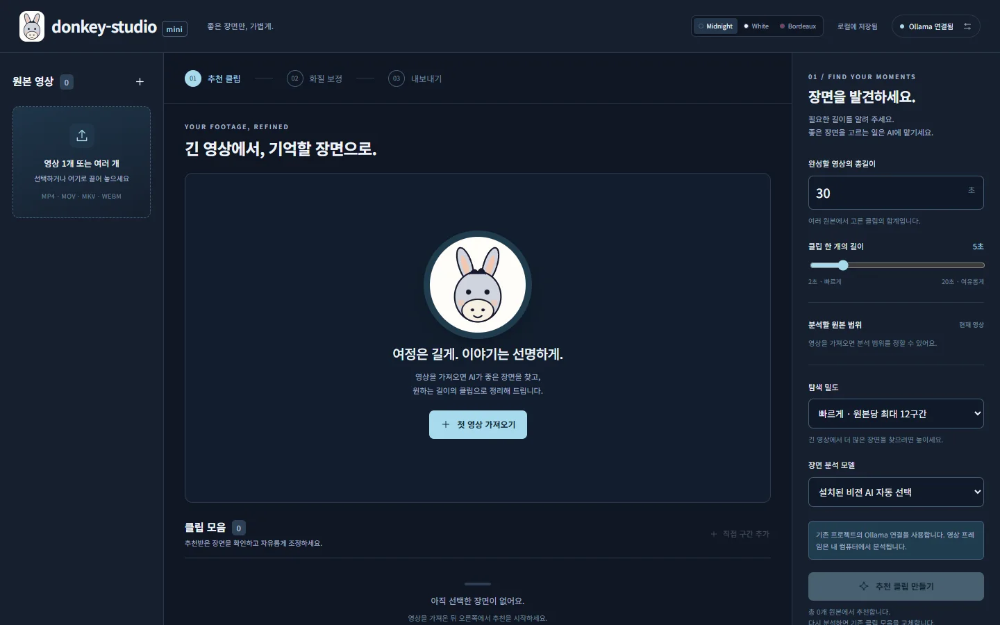
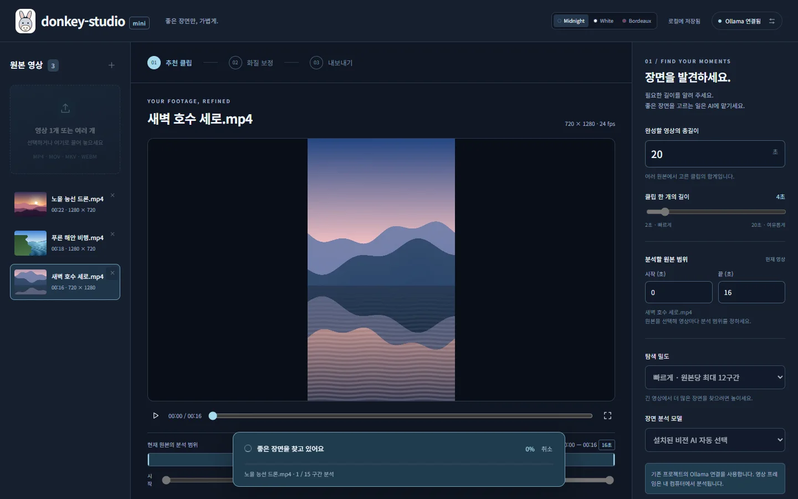
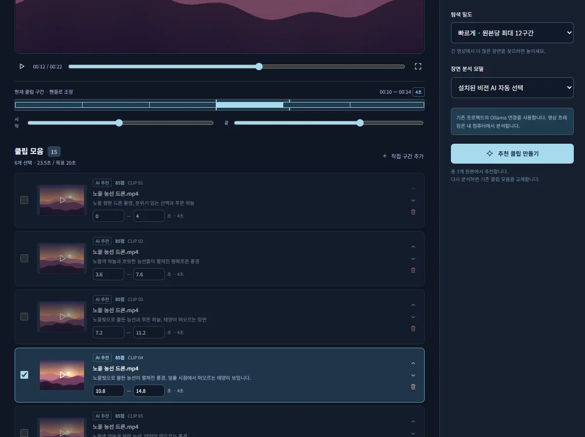
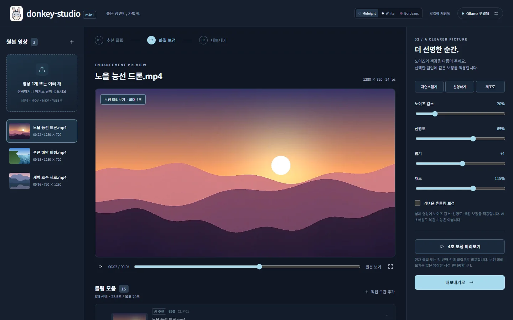
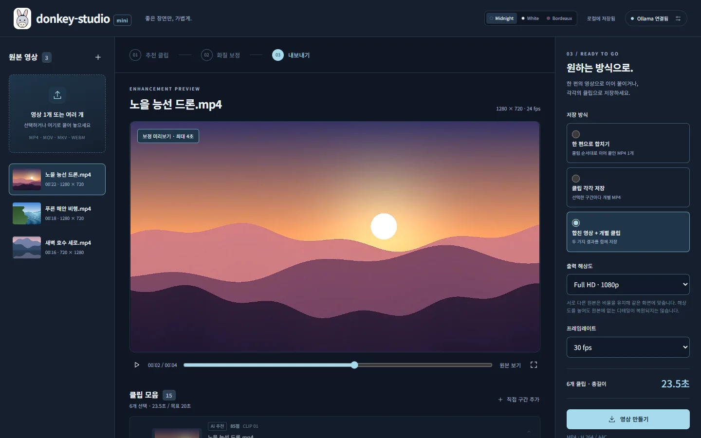
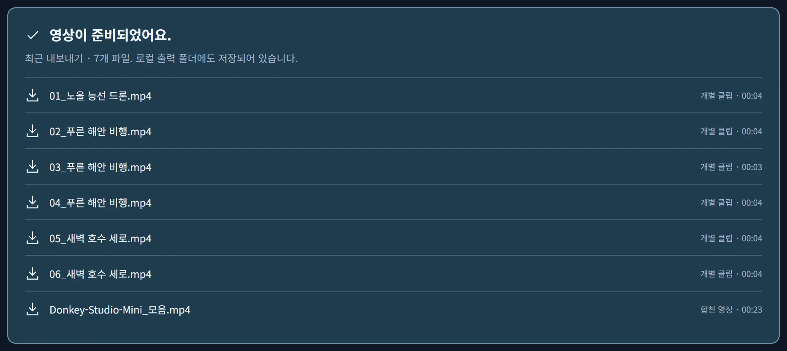

AI 장면 추천
원본을 구간별로 살펴 선명도·밝기·움직임 점수를 매기고, 내 PC의 Ollama 비전 모델이 장면을 보고 판단해요.
Introduction
한 시간짜리 비행 영상을 처음부터 끝까지 돌려 볼 필요 없어요. 원하는 길이만 정하면 AI가 장면을 추천하고, 나는 고르고 다듬기만 하면 돼요.
원본을 구간별로 살펴 선명도·밝기·움직임 점수를 매기고, 내 PC의 Ollama 비전 모델이 장면을 보고 판단해요.
완성할 총길이(예: 30초)와 클립 길이(2~20초)를 정하면 그 길이에 맞춰 추천 클립을 채워요.
추천 클립을 재생하며 시작·끝을 조정하고, 선택 해제·직접 추가·순서 변경까지 자유롭게.
노이즈 감소·선명도·밝기·채도·가벼운 흔들림 보정. 4초 미리보기는 실제 FFmpeg로 처리한 결과예요.
클립마다 MP4로, 이어 붙인 합본으로, 또는 둘 다. 1080p·4K·원본 크기와 24·30·60fps 중에서 골라요.
이 PC(127.0.0.1)에서만 열리고 계정·클라우드 업로드가 없어요. 원본 파일은 고치지 않고 그대로 둬요.

Midnight
White
BordeauxDownload
GitHub에 올라가 있는 최신 버전을 ZIP으로 바로 받거나, Git으로 받아요. 서버와 분석 엔진이 미리 빌드되어 있어 npm install 없이 바로 실행돼요.
ZIP 약 220 KB · 압축을 풀면 바로 실행 · GitHub main 최신본
Git을 쓴다면 저장소를 복제해요. 새 버전이 나오면 폴더에서 git pull 한 번이면 끝.
git clone https://github.com/buddykorea79-cell/Donkey-Studio-mini.git
Installation
Windows 기준이에요. 처음 한 번만 준비하면, 다음부터는 아이콘 하나 더블클릭으로 열려요.
winget install --id OpenJS.NodeJS.LTS -e
winget install --id Gyan.FFmpeg.Essentials -e
node -v 가 v22 이상, ffmpeg -version 이 나오면 준비 끝.
D:\Donkey-Studio-Mini (한글 경로도 괜찮아요)start-donkey-studio-mini.cmd 를 더블클릭해요. 서버가 뒤에서 켜지고 브라우저에 http://127.0.0.1:4310 이 열려요. 이미 켜져 있으면 창만 다시 열어 줘요.stop-donkey-studio-mini.cmd 를 실행해요. 작업은 자동 저장돼서 다음에 이어서 할 수 있어요.data)와 결과물(output) 폴더는 그대로 남아요.AI 추천은 내 PC에서 돌아가는 Ollama 비전 모델을 써요. 영상 프레임이 밖으로 나가지 않아요.
winget install --id Ollama.Ollama -e
ollama pull qwen3-vl:4b
qwen3-vl:4b 는 검증에 쓴 가벼운 비전 모델이에요(약 3.3 GB). 설치된 비전 모델 중 가장 작은 모델이 기본으로 골라져요.
PORT | 앱 주소의 포트 (기본 4310) |
FFMPEG_PATH | FFmpeg 실행 파일을 직접 지정 |
OLLAMA_HOST | Ollama 주소 (기본 127.0.0.1:11434, 이 PC 주소만) |
MINI_DATA_DIR | 프로젝트·업로드 복사본 폴더 (기본 data) |
MINI_OUTPUT_DIR | 결과 영상 폴더 (기본 output) |
How to use
영상을 넣고, 추천받고, 다듬고, 보정해서, 저장. 화면 위쪽의 01 추천 클립 → 02 화질 보정 → 03 내보내기 순서대로 따라가면 돼요.






output 에도 남아요.프로젝트와 업로드 복사본은 data, 결과는 output 폴더에 저장돼요. 편집 내용은 자동 저장되고, 저장에 실패하면 화면의 저장 재시도로 다시 저장해요.
FAQ
프로그램과 AI 모델을 내려받을 때만 필요해요. 영상 처리와 AI 분석은 모두 이 PC에서 이뤄지고, 계정·클라우드 업로드·외부 영상 전송이 없어요.
네. 오른쪽 장면 분석 모델에서 AI 없이 · 화질 점수로 선별을 고르면 선명도·밝기·움직임 점수만으로 장면을 추천해요. 자르기·보정·내보내기는 똑같이 쓸 수 있어요.
HEVC(H.265)처럼 브라우저가 재생하지 못하는 코덱이에요. 화면의 호환 미리보기 만들기를 누르면 가벼운 미리보기 영상을 만들어 보여 줘요. 변환 시간은 영상 길이에 비례하고, 내보내기는 항상 원본에서 처리해요.
FFmpeg를 설치한 직후라면 열려 있던 터미널·런처를 닫고 다시 실행하거나 PC를 다시 시작해 보세요. 다른 위치에 있다면 환경 변수 FFMPEG_PATH 로 ffmpeg.exe 경로를 지정해요. 공유(shared) 빌드는 같은 폴더의 DLL도 함께 있어야 해요.
런처 창에 Node.js 22 or newer is required 가 보이면 Node.js를 설치하거나 업데이트해요. could not start 가 보이면 앱 폴더의 data\server-error.log 를 열어 보세요. “포트가 사용 중”이라면 다른 프로그램이 4310 포트를 쓰고 있는 거예요. 그 프로그램을 끄거나 환경 변수 PORT 로 다른 번호를 지정해요.
더블클릭 런처는 Windows용이에요. Node.js와 FFmpeg가 있다면 폴더에서 npm start 로 서버를 켜고 http://127.0.0.1:4310 을 열 수 있지만, 검증은 Windows에서만 했어요.
Donqui Studio의 V.Clip 장면 분석(프레임 추출·화질 점수·Ollama 비전)만 떼어 가볍게 만든 버전이에요. 녹화·음악·자막·AI 채팅·효과 편집기는 들어 있지 않아요.